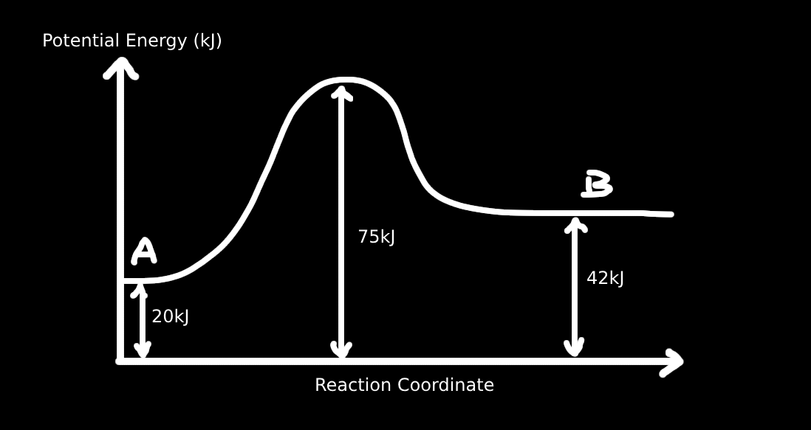

Questions (with solutions!)
NOTE: The solutions are wrote by ChatGPT.
I am aware of the solutions may be bad/confusing (I tried to edit the ones that may be confusing). If you are still confused on any question, feel free to ask someone that's good at the topic (or ask ChatGPT for more clarification lol) or you can just skip the question for now, and come back later.
This also means that the solution MAY be wrong (or I wrote the questions wrong for ChatGPT).
Update: For later questions I changed to using Claude, so it should be more accurate!
1. Which of the following statements concerning the diagram is correct?
A. The heat of reaction for the overall reaction is –3 kJ mol⁻¹
B. The activation energy for A → C is 10 kJ mol⁻¹
C. The step which decides the rate is C → E
D. Intermediate products are B and D
Solution:
From the diagram:
– A is the starting point (reactant)
– E is the final point (product)
– Energy difference from A to E = 6 – 9 = –3 kJ mol⁻¹ → ✅ A is correct
B. Activation energy for A → C = Energy from A to highest point between A and C (i.e., B)
That height is 4 kJ, not 10 → ❌
C. The rate-determining step is the one with the highest energy barrier, which is from C to D (barrier = 7 kJ) → ❌
D. Intermediates lie in valleys between steps → B and C are intermediates. D is a transition state (peak), not intermediate → ❌
Answer: A. The heat of reaction for overall reaction is –3 kJ mol⁻¹
2. What conclusion can be made from the diagram?
I. X is the activated complex
II. Heat of reaction is E₁ – E₃
III. Forward reaction is exothermic
IV. Activation energy for reverse reaction is E₁ – E₂
V. The energy of products is smaller than reactants
A. I IV
B. I IV V
C. II III V
D. I III IV V
Solution:
I. ✅ X is the activated complex (highest energy point).
II. ❌ Heat of reaction is products - reactants = E2 - E3
III. ❌ Forward reaction is endothermic, since products (E₁) are higher than reactants (E₃).
IV. ✅ Activation energy for reverse reaction = peak (X) – products = E₁ – E₂.
V. ❌ Products have higher energy than reactants → not more stable.
Only correct: I and IV
Answer: A. I IV
3. Copper(II) nitrate is decomposed by heat as shown:
2Cu(NO₃)₂ → 2CuO + 4NO₂ + O₂
Some copper(II) nitrate powder was placed inside a 5 dm³ steel container and heated. It yielded 0.2 mol of nitrogen dioxide gas after 5 seconds. What is the rate of evolution of oxygen gas?
A. \( 2 \times 10^{-3} \) mol dm⁻³ s⁻¹
B. \( 8 \times 10^{-3} \) mol dm⁻³ s⁻¹
C. \( 1 \times 10^{-2} \) mol dm⁻³ s⁻¹
D. \( 4 \times 10^{-2} \) mol dm⁻³ s⁻¹
Solution:
From the equation:
2Cu(NO₃)₂ → 2CuO + 4NO₂ + O₂
Mole ratio: 4NO₂ : 1O₂
So, from 0.2 mol NO₂ produced:
\[ \text{mol O}_2 = \frac{1}{4} \times 0.2 \] \[ = 0.05\, \text{mol} \] Volume = 5 dm³ Time = 5 s
\[ \text{Rate} = \frac{\text{mol}}{\text{volume} \times \text{time}} \] \[ = \frac{0.05}{5 \times 5} \] \[ = 0.002\, \text{mol dm}^{-3} \text{ s}^{-1} \] Answer: A. \( 2 \times 10^{-3} \) mol dm⁻³ s⁻¹
4. If the rate equation of a reaction is R = k[A]²[B], which of the following descriptions are correct?
I. This is a third order reaction
II. The equation is obtained by experiment
III. When a catalyst is added, the value of k decreases
IV. The reaction rate is independent of the conc of B
V. When [A] and [B] were increased by two folds, the reaction rate will increase by eight times
A. I IV V
B. I II V
C. II V
D. I III
Solution:
I. ✅ Order = 2 (for A) + 1 (for B) = 3rd order overall
II. ✅ Rate equations are always determined experimentally
III. ❌ A catalyst increases the rate constant k, not decreases
IV. ❌ Rate depends on [B] to the first power
V. ✅ If [A] and [B] both double: R = k(2[A])²(2[B]) = k × 4[A]² × 2[B] = 8k[A]²[B]
Correct statements: I, II, V
Answer: B. I II V
5. Table below shows the result of the experiment for the reactions between A and B:
| Experiment | [A] | [B] | Initial Rate |
|---|---|---|---|
| 1 | a | b | R |
| 2 | a | 2b | 8R |
| 3 | 2a | b | 4R |
| 4 | 2a | b/2 | y |
What is the value of y in terms of R?
A. R/2
B. R
C. 2R
D. 4R
Solution:
First, determine the rate equation from experiments 1-3:
• Compare exp 1 & 2: [B] doubles → rate doubles → order in B = 1
• Compare exp 1 & 3: [A] doubles → rate increases 4× → order in A = 2
• Therefore: Rate = k[A]²[B]
For experiment 4:
Rate₄ = k(2a)²(b/2) = k × 4a² × b/2 = 2ka²b
Rate₁ = ka²b = R
Therefore: y = 2R
Answer: C. 2R
6. The two steps involved in the reaction X(g) + 2Y(g) → XY₂(g) are shown below:
X(g) + Y(g) → XY(g) (slow)
XY(g) + Y(g) → XY₂(g) (fast)
What is the rate of reaction for the overall reaction?
A. R = k[X]¹[Y]²
B. R = k[X]¹[Y]¹
C. R = k[X]⁰[Y]²
D. R = k[XY]¹
Solution:
In a multi-step reaction, the slowest step determines the overall rate.
The slow step is: X(g) + Y(g) → XY(g)
Therefore, the rate equation is based on this step:
R = k[X]¹[Y]¹
Note: Even though the overall reaction consumes 2Y, the rate depends only on the slow step, which involves only 1Y.
Answer: B. R = k[X]¹[Y]¹
6. The reaction P + Q → products is first order with respect to P and zero order with respect to Q. If the rate constant doubles for each 10°C rise in temperature, which of the following sets of conditions will give the greatest rate of reaction?
A. P = 0.1 mol dm⁻³, Q = 0.2 mol dm⁻³, Temp = 40°C
B. P = 0.1 mol dm⁻³, Q = 0.3 mol dm⁻³, Temp = 30°C
C. P = 0.2 mol dm⁻³, Q = 0.2 mol dm⁻³, Temp = 30°C
D. P = 0.3 mol dm⁻³, Q = 0.1 mol dm⁻³, Temp = 30°C
Solution:
Rate equation: R = k[P]¹[Q]⁰ = k[P]
Since [Q] has zero order, concentration of Q doesn't affect rate.
Let k₃₀ = rate constant at 30°C
At 40°C: k₄₀ = 2k₃₀ (doubles for 10°C increase)
Calculate rates:
A. R = k₄₀ × 0.1 = 2k₃₀ × 0.1 = 0.2k₃₀
B. R = k₃₀ × 0.1 = 0.1k₃₀
C. R = k₃₀ × 0.2 = 0.2k₃₀
D. R = k₃₀ × 0.3 = 0.3k₃₀
Greatest rate: Option D
Answer: D. P = 0.3 mol dm⁻³, Q = 0.1 mol dm⁻³, Temp = 30°C
7. When a reaction involving no gas occurs in a solution, which of the following does not obviously affect the rate of reaction?
A. Catalyst
B. Pressure
C. Temperature
D. Concentration
Solution:
For reactions in solution with no gas involved:
• Catalyst ✅ - Provides alternative pathway, affects rate
• Temperature ✅ - Increases kinetic energy, affects rate
• Concentration ✅ - Higher concentration increases collision frequency
• Pressure ❌ - No effect on liquid/solution reactions (unlike gas reactions)
Pressure mainly affects gas reactions by changing gas concentrations. For solution reactions, pressure changes don't significantly affect the rate.
Answer: B. Pressure
8. Figure below is the energy diagram for the reaction A → B. Which of the following descriptions concerning the figure are correct?

I. The activation energy of the reaction is 75 kJ
II. The enthalpy of the reactant is 42 kJ
III. This is an endothermic reaction
IV. The heat of the reaction is 22 kJ
A. I II III
B. I II IV
C. I III IV
D. III IV
Solution:
From the energy diagram:
• Reactant energy level: 20 kJ
• Transition state (peak): 75 kJ
• Product energy level: 42 kJ
I. ❌ Activation energy = Peak - Reactant = 75 - 20 = 55 kJ
II. ❌ The enthalpy of the reactant is 20 kJ, not 42 kJ
III. ✅ Products (42 kJ) > Reactants (20 kJ) → endothermic
IV. ✅ Heat of reaction = Products - Reactants = 42 - 20 = 22 kJ
Answer: D. III IV
9. Sodium thiosulphate solutions of various concentrations and water were mixed according to the data below in conical flasks A, B, C, and D. Then 5 mL of 2 mol L⁻¹ HCl were added separately to each of the flasks. In which conical flask did the fastest rate of reaction take place?
A. Conc of solution = 1 mol L⁻¹, Volume of solution = 40 mL, Volume of water = 10 mL
B. Conc of solution = 1.5 mol L⁻¹, Volume of solution = 30 mL, Volume of water = 20 mL
C. Conc of solution = 2.5 mol L⁻¹, Volume of solution = 15 mL, Volume of water = 35 mL
D. Conc of solution = 3 mol L⁻¹, Volume of solution = 10 mL, Volume of water = 40 mL
Solution:
Calculate the final concentration of sodium thiosulphate after dilution:
Final concentration = (Initial conc × Volume of solution) ÷ Total volume
Total volume = Solution + Water + HCl = 50 + 5 = 55 mL
A. Final [Na₂S₂O₃] = (1 × 40) ÷ 55 = 0.727 mol L⁻¹
B. Final [Na₂S₂O₃] = (1.5 × 30) ÷ 55 = 0.818 mol L⁻¹
C. Final [Na₂S₂O₃] = (2.5 × 15) ÷ 55 = 0.682 mol L⁻¹
D. Final [Na₂S₂O₃] = (3 × 10) ÷ 55 = 0.545 mol L⁻¹
Highest concentration → Fastest rate
Answer: B. Conc = 1.5 mol L⁻¹, Volume = 30 mL, Water = 20 mL
10. An investigation into the reaction rate of the reaction A + 2B → X + Y yielded the data as shown below:
Experiment 1: [A] = 1×10⁻³ mol L⁻¹, [B] = 2×10⁻³ mol L⁻¹, R = 2.75×10⁻⁷
Experiment 2: [A] = 1×10⁻³ mol L⁻¹, [B] = 4×10⁻³ mol L⁻¹, R = 5.5×10⁻⁷
Experiment 3: [A] = 2×10⁻³ mol L⁻¹, [B] = 2×10⁻³ mol L⁻¹, R = 1.1×10⁻⁶
The expression of the rate of reaction is:
A. R = k[A]
B. R = k[A][B]
C. R = k[A]²[B]
D. R = k[A][B]²
Solution:
Compare experiments to find orders:
Order with respect to B:
Compare exp 1 & 2: [A] constant, [B] doubles (2→4), rate doubles (2.75→5.5)
Rate ratio = 5.5/2.75 = 2 = 2¹ → Order in B = 1
Order with respect to A:
Compare exp 1 & 3: [B] constant, [A] doubles (1→2), rate increases 4× (2.75→11)
Rate ratio = 11/2.75 = 4 = 2² → Order in A = 2
Therefore: R = k[A]²[B]
Answer: C. R = k[A]²[B]
11. Zn(s) + 2HCl(aq) → ZnCl₂(aq) + H₂(g)
Which of the following factors may affect the rate of the chemical reaction stated above?
I. Temperature
II. Concentration of HCl
III. Size of Zn pellets
A. II
B. I II
C. I III
D. I II III
Solution:
I. ✅ Temperature - Higher temperature increases reaction rate
II. ✅ Concentration of HCl - Higher [HCl] increases collision frequency
III. ✅ Size of Zn pellets - Smaller pellets = larger surface area = faster rate
All three factors affect the rate of this heterogeneous reaction.
Answer: D. I II III
12. When calcium carbonate reacts with excess acid, carbon dioxide is produced. The reaction may result in different gas volume–time curves depending on the conditions.
If curve P is shifted towards curve Q, what change was likely made?
A. By adding a catalyst
B. By decreasing the concentration of the acid
C. By increasing the mass of calcium carbonate
D. By carrying out the reaction at a lower temperature
Solution:
Curve P has a higher total gas volume and steeper slope → faster rate and more gas.
Curve Q has less gas produced and a slower rate.
To shift from P to Q, we need to slow the rate and reduce the amount of CO₂ produced.
Only C (increasing CaCO₃) increases the amount of product, not reduce it.
Catalyst (A) only increases rate — doesn't change volume.
Lower temperature (D) slows rate but doesn't affect amount much.
Decreasing acid concentration lowers both rate and total gas — matches curve Q.
Answer: B. By decreasing the concentration of the acid
13. The data below shows the results of experiments for the reaction between P and Q:
Experiment I: [P] = 0.125 mol dm⁻³, [Q] = 0.224 mol dm⁻³, Rate = 0.03 mol dm⁻³s⁻¹
Experiment II: [P] = 0.250 mol dm⁻³, [Q] = 0.224 mol dm⁻³, Rate = 0.06 mol dm⁻³s⁻¹
Experiment III: [P] = 0.250 mol dm⁻³, [Q] = 0.112 mol dm⁻³, Rate = 0.015 mol dm⁻³s⁻¹
What is the order of this reaction?
A. 0
B. 1
C. 2
D. 3
Solution:
Compare Experiment I and II: [P] doubles, [Q] constant → rate doubles → order in P is 1.
Compare Experiment II and III: [P] constant, [Q] halves → rate becomes 0.06 → 0.015 = ×1/4 → order in Q is 2.
So overall order = 1 (from P) + 2 (from Q) = 3
Answer: D. 3
14. A mixture of 0.1 mol of N₂ and 0.3 mol of H₂ is sealed in a 2 L container at a certain condition and allowed to react:
N₂(g) + 3H₂(g) → 2NH₃(g)
After 10 minutes, 0.22 mol of H₂ remains unreacted.
What is the rate of reaction in terms of change in H₂ concentration over the first 10 minutes?
A. 0.004 mol L⁻¹min⁻¹
B. 0.008 mol L⁻¹min⁻¹
C. 0.022 mol L⁻¹min⁻¹
D. 0.110 mol L⁻¹min⁻¹
Solution:
Initial H₂ = 0.3 mol → Final H₂ = 0.22 mol → Used = 0.08 mol
In 2 L container: Δ[H₂] = 0.08 mol ÷ 2 L = 0.04 mol L⁻¹
Rate = Δ[H₂] / time = 0.04 / 10 = 0.004 mol L⁻¹min⁻¹
Answer: A. 0.004 mol L⁻¹min⁻¹
15. By which of the following is the rate constant k of a chemical reaction influenced?
A. Concentration of products
B. Volume of container
C. Temperature
D. Pressure
Solution:
The rate constant k depends only on temperature and the nature of the reaction. It is not affected by concentrations, pressure (unless it changes T), or volume.
Answer: C. Temperature
16. Which of the following may affect the rate constant for a chemical reaction?
I. Change in concentration
II. Change in pressure
III. Change in temperature
IV. Adding a catalyst
A. I II III
B. I II IV
C. II III IV
D. III IV
Solution:
The rate constant \( k \) is only affected by temperature and the presence of a catalyst. Concentration and pressure affect the rate, not the value of \( k \).
Answer: D. III IV
17. What is the best explanation for the speeding up of a chemical reaction by a catalyst?
A. It increases the kinetic energy of the reactant molecules
B. It makes the enthalpy change ΔH more negative
C. It increases the equilibrium constant
D. It lowers the energy barrier for the reaction
Solution:
A catalyst lowers the activation energy, so more molecules have enough energy to react.
Answer: D. It lowers the energy barrier for the reaction
18. If the rate equation for 2A + B + H⁺ → C + D is R = k[A][H⁺], then the reaction is:
A. Zero-order reaction
B. First-order reaction
C. Second-order reaction
D. Third-order reaction
Solution:
The total order is the sum of the powers in the rate law: (1 for [A]) + (1 for [H⁺]) = 2.
Answer: C. Second-order reaction
19. Which of the following has the lowest reaction rate at room temperature?
A. 2H₂(g) + O₂(g) → 2H₂O(l)
B. Cu²⁺(aq) + 4NH₃(aq) → [Cu(NH₃)₄]²⁺(aq)
C. CaCO₃(s) + 2HCl(aq) → CaCl₂(aq) + H₂O(l) + CO₂(g)
D. 5Fe²⁺(aq) + MnO₄⁻(aq) + 8H⁺(aq) → 5Fe³⁺(aq) + Mn²⁺(aq) + 4H₂O(l)
Solution:
Option A is a combustion reaction, which is fast. B and D are ionic reactions in aqueous solution, also fast. C involves a solid (CaCO₃), and reactions involving solids are typically slower.
Answer: C. CaCO₃(s) + 2HCl(aq) → CaCl₂(aq) + H₂O(l) + CO₂(g)
20. Which factors influence the rate of chemical reactions?
I. Catalyst
II. Temperature
III. Concentration of reactants
IV. Surface area of reactants
A. I III
B. II III
C. I II IV
D. I II III IV
Solution:
All of the listed factors influence reaction rate. Surface area affects reactions involving solids.
Answer: D. I II III IV
21. A₂(g) + 3B₂(g) → 2AB₃(g) is a single-step reaction with rate R. If [A₂] is tripled and the volume is doubled, the new rate is:
A. \( \frac{3}{4}R \)
B. \( \frac{7}{4}R \)
C. \( \frac{3}{16}R \)
D. \( \frac{81}{16}R \)
Solution:
For a single-step reaction, the rate law is:
\[ R = k[A_2]^1[B_2]^3 \] Let’s assume initial concentrations of [A₂] = 1, [B₂] = 1.
So initial rate \( R = k \cdot 1 \cdot 1^3 = k \).
Now triple [A₂] → 3, and double the volume → all concentrations are halved.
So new [A₂] = \( \frac{3}{2} \), [B₂] = \( \frac{1}{2} \)
New rate: \[ R_{\text{new}} = k \cdot \left(\frac{3}{2}\right)^1 \cdot \left(\frac{1}{2}\right)^3 = k \cdot \frac{3}{2} \cdot \frac{1}{8} = k \cdot \frac{3}{16} \] So, \[ R_{\text{new}} = \frac{3}{16} R \] Answer: C. \( \frac{3}{16}R \)
22. The rate equation for X + Y₂ → XY₂ is R = k[X]²[Y₂]⁰. Which of the following is correct?
A. When [X] is doubled, the rate is also doubled
B. [X] does not affect the rate
C. Changing [X] does not affect the value of k
D. Y₂ does not take part in the rate-determining step
Solution:
The reaction rate depends only on [X]², and [Y₂] has no effect (exponent is 0). D is true — if [Y₂] has no effect, it’s not in rate-determining step.
Answer: D. Y₂ does not take part in the rate-determining step
23. Given the reaction: 4NH₃ + 5O₂ → 4NO + 6H₂O
If the rates of change of concentrations are represented as:
RNH₃, RO₂, RNO, RH₂O, the correct relationship is:
A. \( \frac{4}{5} R_{NH₃} = R_{O₂} \)
B. \( \frac{5}{6} R_{O₂} = R_{H₂O} \)
C. \( \frac{2}{3} R_{NH₃} = R_{H₂O} \)
D. \( \frac{4}{5} R_{O₂} = R_{NO} \)
Solution:
Balanced equation:
4NH₃ + 5O₂ → 4NO + 6H₂O
So: \[ \frac{R_{NH₃}}{4} = \frac{R_{O₂}}{5} = \frac{R_{NO}}{4} = \frac{R_{H₂O}}{6} \]
Check options:
A. \( \frac{4}{5} R_{NH₃} = R_{O₂} \) ← ❌ Wrong. Correct is \( R_{O₂} = \frac{5}{4} R_{NH₃} \)
B. \( \frac{5}{6} R_{O₂} = R_{H₂O} \) ← ❌ Incorrect. Should be \( R_{H₂O} = \frac{6}{5} R_{O₂} \)
C. \( \frac{2}{3} R_{NH₃} = R_{H₂O} \) ← ❌ Incorrect. Should be \( R_{H₂O} = \frac{3}{2} R_{NH₃} \)
D. \( \frac{4}{5} R_{O₂} = R_{NO} \) ← ✅ Correct.
Answer: D. \( \frac{4}{5} R_{O₂} = R_{NO} \)
24. The rate of reaction is given by R = k[A]²[B].
At certain concentrations, the rate is \( x \text{ mol L}^{-1} \text{s}^{-1} \).
What will the rate be if [A] is doubled and [B] is halved?
A. \( \frac{1}{2}x \)
B. \( 2x \)
C. \( 3x \)
D. \( 4x \)
Solution:
New rate = \( k \times (2[A])^2 \times (0.5[B]) = k[A]^2[B] \times 4 \times 0.5 = 2x \)
Answer: B. 2x